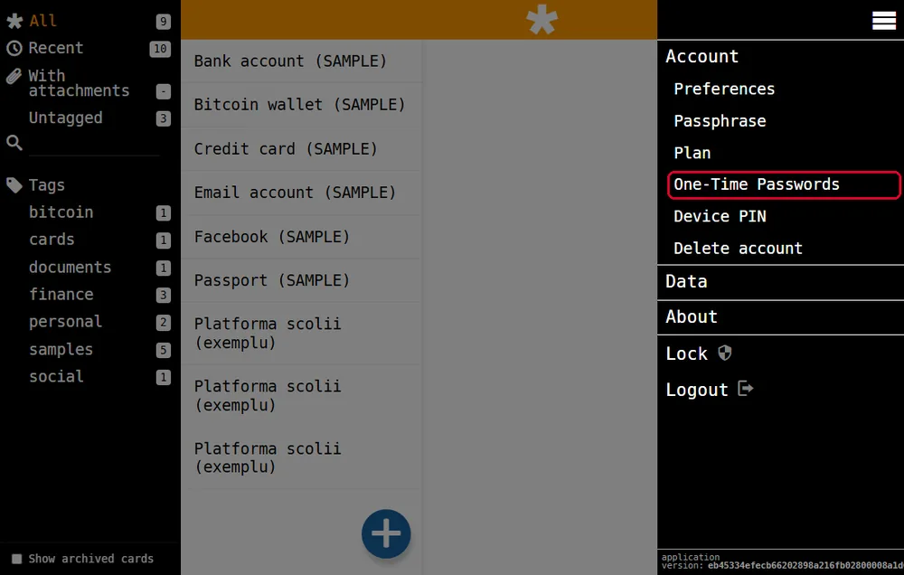
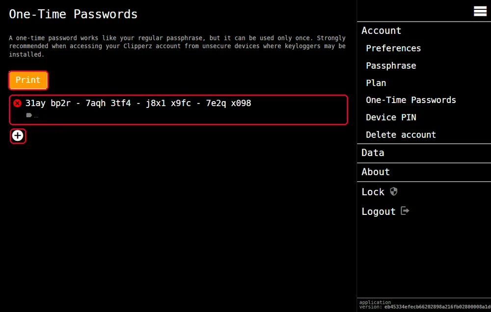
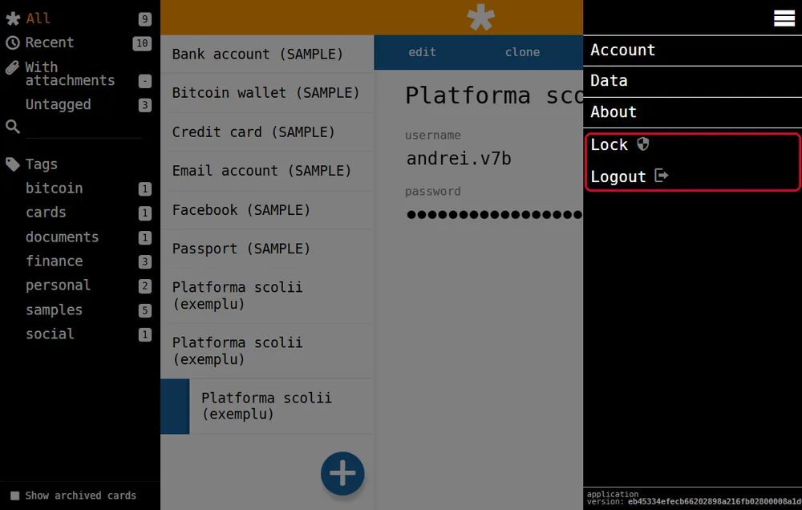
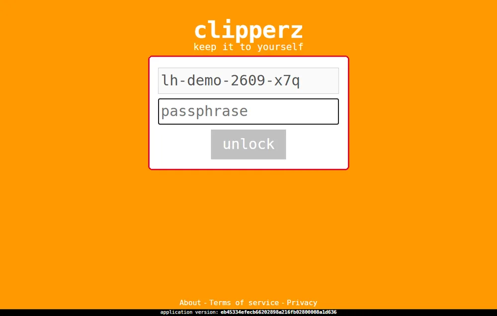

Rutina de la școală
La finalul paginii vei putea să-ți faci acasă parole de unică folosință și să folosești seiful pe calculatorul școlii în 7 pași, fără să lași nimic în urmă.
Ce trebuie să știi
- Cum deschizi fereastra de Invitat și ce nu face ea. Vezi pagina 2, pașii 3 și 4.
- Cum intri în seif cu numele de utilizator și fraza de acces. Vezi pagina 3, pasul 7.
- Cum copiezi parola dintr-o fișă și ce e memoria de copiere. Vezi pagina 4, pasul 4.
- Deconectarea. Se învață în jocul Comunic prin Internet, în siguranță, nivelul 2, pasul „Parola o știi doar tu”.
1Pericolul pe care fereastra de Invitat nu-l oprește
Pe un calculator folosit de mulți poate exista, rar, un keylogger. Un keylogger este un program ascuns care înregistrează fiecare tastă apăsată. Dacă ai scrie fraza de acces pe un astfel de calculator, programul ar afla-o.
Fereastra de Invitat nu te apără de el. Clipperz are pentru asta o unealtă: parolele de unică folosință.
2Parola de unică folosință
O parolă de unică folosință (în engleză, one-time password) merge o singură dată. A doua oară, seiful o refuză. O scrii în locul frazei de acces, împreună cu numele tău de utilizator.
Chiar dacă un keylogger o înregistrează, nu-i folosește la nimic: parola a fost deja folosită. Clipperz o recomandă „when accessing your Clipperz account from unsecure devices where keyloggers may be installed” (când intri de pe aparate nesigure, unde pot fi keyloggere).
Nu am înțeles — explică-mi altfel
E ca un bilet de autobuz. După ce l-ai compostat, nu mai merge. Dacă cineva ți-l fură din mână după ce ai urcat, nu poate urca cu el. Fraza de acces e abonamentul: pe acela nu-l arăți nimănui.
3Acasă: îți faci parolele pentru școală
- Intri în seif acasă, cu fraza de acces.
- Apeși meniul (cele trei linii, sus în dreapta), apoi
Account(contul). - Alegi
One-Time Passwords(parole de unică folosință). - Apeși +. Apare o parolă nouă, în grupuri de câte patru semne. Poți face câte ai nevoie.
- Apeși
Print(tipărește) sau le scrii de mână pe o hârtie. Hârtia o ții în penar.


La scriere nu contează literele mari și nici spațiile. Clipperz spune că parola e „case and space insensitive”.
După folosire, tai parola pe hârtie. Dacă pierzi hârtia, acasă intri în același ecran și ștergi parolele nefolosite cu X-ul roșu din stânga lor.
4La școală: rutina în 7 pași
- Deschizi o fereastră de Invitat (pagina 2).
- Scrii
clipperz.is/appși verifici bara de adrese. - Intri: în câmpul
usernamescrii numele de utilizator, iar în câmpulpassphrasescrii parola de unică folosință de azi, în locul frazei. Apeșilogin. Apoi tai parola pe hârtie. - Deschizi fișa contului: clic pe titlul ei din lista din mijloc. Faci clic pe bulinele parolei, apoi, pe platformă, clic în câmpul pentru parolă și Ctrl+V.
- Dacă browserul te întreabă dacă salvează parola (apare o casetă mică, sus în dreapta), apeși butonul care refuză sau închizi caseta cu X-ul ei. Nu apeși butonul de salvare.
- Când termini, te deconectezi de pe platformă. Apoi, în Clipperz, apeși meniul și
Logout(ieși). Copiezi un cuvânt obișnuit (dublu clic pe el, apoi Ctrl+C), ca să înlocuiești parola din memoria de copiere. - Închizi fereastra de Invitat, cu toate filele ei.
O parolă puternică nu te scutește de pașii 6 și 7. Dacă pleci cu contul deschis, următorul elev intră direct în el. Nu are nevoie să-ți știe parola: ești deja conectat.

5Lock sau Logout?
Lock (încuie) închide seiful, dar pagina rămâne deschisă. Numele tău rămâne scris, iar seiful cere fraza ca să se descuie (unlock). E bun pentru o pauză scurtă, acasă.
Logout (ieși) te scoate de tot din cont. La școală alegi mereu Logout.

Încearcă
Exercițiu. Adevărat sau fals: „O parolă de unică folosință înregistrată de un keylogger poate fi folosită din nou de hoț.”
Verifică răspunsul
Fals. Parola a mers o singură dată, când ai intrat tu. A doua oară seiful o refuză.
Încă un exercițiu. Ora s-a terminat. Ai lucrat pe platforma școlii, cu parola luată din seif. Ce trei lucruri faci înainte să te ridici de la calculator?
Verifică răspunsul
1. Te deconectezi de pe platformă. 2. În Clipperz apeși meniul și Logout, apoi copiezi un cuvânt obișnuit. 3. Închizi fereastra de Invitat, cu toate filele ei.